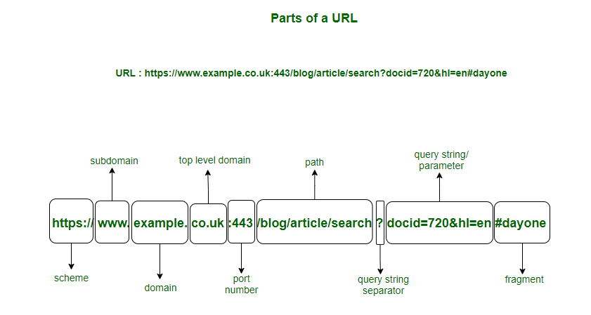

Definisi Nama Domain
Nama Domain (Domain Name) adalah alamat yang mudah diingat dan diketik oleh manusia untuk mengakses sebuah website di internet. Alih-alih mengingat alamat IP server yang rumit (seperti 172.217.14.228), kita cukup mengingat nama yang unik seperti google.com atau detik.com.
Pada dasarnya, nama domain adalah "label" atau "nama panggilan" yang dipetakan ke alamat IP server tempat website itu disimpan.
Bagaimana Cara Kerjanya?
Cara kerja nama domain sangat bergantung pada sistem lain yang disebut DNS (Domain Name System), yang akan kita bahas di halaman lain.
-
Kamu mengetik
google.comdi browser. -
Browser kamu bertanya ke server DNS, "Hei, apa alamat IP untuk
google.com?" -
Server DNS (yang bertindak seperti buku telepon raksasa) mencari dan menjawab, "Alamat IP-nya adalah
172.217.14.228." - Browser kamu kemudian menggunakan alamat IP tersebut untuk menghubungi server Google dan meminta halaman web-nya.
Struktur Nama Domain
Nama domain memiliki beberapa bagian, dibaca dari kanan ke kiri:
-
Top-Level Domain (TLD): Ini adalah bagian paling akhir, seperti
.com(komersial),.org(organisasi),.gov(pemerintah), atau kode negara seperti.id(Indonesia). -
Second-Level Domain (SLD): Ini adalah bagian unik yang kamu daftarkan, seperti
googledalamgoogle.com. -
Subdomain (Opsional): Ini adalah awalan yang ditambahkan, seperti
mapsdalammaps.google.com.